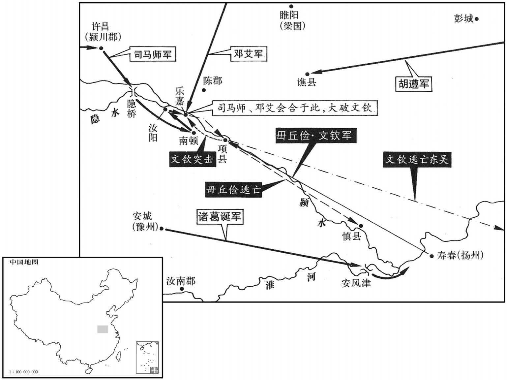

公元255年资治通鉴：本年记事、原文与白话对照
按原书编年位置阅读；追叙和史论不等于本年发生的事件。白话采用所据译本，缺译不以生成译文补齐。
卷76 · 本年记事
公元255年 · 魏烈祖明皇帝正二年
二年〔（乙亥、二五五）〕
上传原文的注释括号有异常，字符原样保留；无法可靠划分的段落默认全文显示。
本年事件索引（现代整理）
- 毌丘俭、文钦假托太后诏书起兵讨伐司马师
- 王肃、傅嘏、锺会劝司马师亲征淮南叛军
- 郑袤建议司马师深沟高垒、挫败叛军锐气
- 王基力主迅速进驻南顿，反对司马师按兵不动
- 王基违令先占南顿，毌丘俭失去争夺粮仓的机会
- 郭淮去世，陈泰接任征西将军
- 司马师围困淮南叛军，等待其粮尽人心离散
- 文钦、文鸯夜袭司马师营，文鸯多次突围杀伤追兵
- 尹大目试图劝文钦暂忍，文钦拒绝并斥其背叛曹氏
- 毌丘俭兵败被杀，文钦降吴，诸葛诞平定寿春
- 朝廷宽免多数毌丘俭党羽，并规定出嫁女子不连坐父族
- 司马师病逝，司马昭受命为大将军并接掌辅政
- 孙峻撤军返回吴国，任命文钦为镇北大将军
- 曹芳立卞氏为皇后并大赦
- 孙仪等谋杀孙峻失败，朱公主也遭牵连被杀
- 滕胤劝孙峻停止修筑广陵城，孙峻不听而工程未成
- 姜维不顾张翼反对，再度率军进攻陇西
- 王经在洮西惨败退守狄道，姜维乘胜围城
- 陈泰急援狄道，击退姜维并保全秦州
- 司马昭称赞陈泰临危善断、独力解围
- 姜维退驻锺提
- 吴国开始在建业营建太庙，尊孙权为太祖

本年形势与背景参考图
春，正月，俭、钦矫太后诏，起兵于寿春，移檄州郡以讨司马师，乃表言：「相国懿，忠正，有大动于社稷，宜宥及后世，请废师，以侯就第，以弟昭代之。太尉孚，忠孝小心，护军望，忠公亲事，皆宜亲宠，授以要任。」望，孚之子也。俭又遣使邀镇南将军诸葛诞，诞斩其使。〔时诞都督豫州。〕俭、钦将五六万众渡淮，西至项；俭坚守，使钦在外为游兵。
春季，正月，丘俭、文钦假称受太后诏书，在寿春起兵，并向各州郡发檄文以共同讨伐司马师，又上表说：“相国司马懿，为人忠正，为国家立了伟大功勋，应该宽宥他的后世，请求只废掉司马师的官职，让他以侯爵的身分退居家中，让其弟司马昭代替他。太尉司马孚尽忠尽孝小心奉职，护军司马望也能忠心耿耿尽职尽责，他们都应得到亲近和信任，授予他们重要职务。”司马望是司马孚之子。丘俭又派使者邀请镇南将军诸葛诞共讨司马师，但诸葛诞杀掉了使者。丘俭、文钦率五六万大军渡过淮河，向西到达项县；丘俭坚守城池，让文钦在外率领游动兵力。
司马师问计于河南尹王肃，肃曰：「昔关羽虏于禁于汉滨，有北向争天下之志，后孙权袭取其将士家属，羽士众一旦瓦解。〔事见六十八卷汉献帝建安二十四年。〕今淮南将士父母妻子皆在内州，〔魏制，诸将出征及镇守方面，皆留质任。时淮南士皆自内州出戌，故家属皆留内。〕但急往御卫，〔御俭、钦之众，使不得进；又卫其家属。〕使不得前，必有关羽土崩之势矣。」时师新割目瘤，创甚，〔瘤，音留，灿也。肉起疾肿曰：瘤。创，初良翻。〕或以为大将军不宜自行，不如遣太尉孚拒之。唯王肃与尚书傅嘏、中书侍郎锺会〔魏初中书既置监、令，又置通事郎，次黄门郎；黄门郎已署事过，通事郎乃署名；已署，奏以入，为帝省读，书可。后改曰：中书侍郎。〕劝师自行，师疑未决。嘏曰：淮、楚兵劲，〔寿春，故楚都，时为淮南重镇以南备吴，劲兵聚焉。〕而俭等负力远鬬，其锋未易当也。〔易，以豉翻。〕若诸将战有利钝，大势一失，则公事败矣。」师蹶然起曰：「我请舆疾而东。」〔蹶然，急遽而起之貌。蹶，音厥，又音姑卫翻。〕戊午，师率中外诸军以讨俭、钦，〔中，谓中军；外，谓城外诸营兵。〕以弟昭兼中领军，留镇洛阳，召三方兵会于陈、许。〔三方，东、西、北也。〕
司马师向河南尹王肃询问计策，王肃说：“从前关羽在汉水之滨俘虏了于禁，有向北争夺天下的志向，后来孙权袭击攻取了其将士的家属，结果关羽的军队一下子就瓦解了。现在淮南众将士的父母妻子都留在内地州县，只要迅速派兵去保护其家属抵御丘俭、文钦的军队，不让他们进来，那他们必然会象关羽那样土崩瓦解。”当时司马师刚刚割掉眼部肿瘤，创口很大，很多人都认为此时大将军不应自己率兵前往，不如派太尉司马孚去抵抗叛军。只有王肃与尚书傅嘏、中书侍郎钟会等人劝司马师亲自去，但司马师犹豫不决。傅嘏说：“淮、楚地区的兵力强劲，而且丘俭等自负力量强大要远征拼斗，其锋锐之势不易抵挡。如果诸将的战斗出现不利，大势一去，那么您的事情就要失败。”司马师快速地站起来说：“我要抱病登车前去东边。”戊午（初五），司马师率领中外各军去讨伐丘俭和文钦，让其弟司马昭兼任中领军，留守洛阳，并召集三个方面的军队在陈县、许县会合。
师问计于光禄动郑袤，〔袤，莫候翻。〕袤曰：「毋丘俭好谋而不达事情，〔好，呼到翻。〕文钦勇而无算。今大军出其不意，江、淮之卒，锐而不能固，宜深沟高垒以挫其气，此亚夫之长策也。」〔汉周亚夫坚壁以破吴、楚。〕师称善。
司马师向光禄勋郑袤询问御敌之策，郑袤说：“丘俭善于谋划但不能通达事情，文钦有勇而无谋。如今大军出其不意地进攻，而江、淮地区的士卒，锐气是不能持久的，您应该深挖沟高立垒以挫其锐气，这是汉代周亚夫用过的妙计。”司马师称赞这个计策好。
师以荆州刺史王基为行监军，假节，统许昌军。〔魏、晋之制，使持节都督诸军为上，假节都督次之假节监诸军又次之，假节行监军又次之。魏受汉禅，以许昌为别宫，屯重兵，以为东、南二方根本。监，古衔翻。〕基言于师曰：「淮南之逆，非吏民思乱也，俭等诳诱迫胁，畏目下之戮，是以尚屯聚耳。〔〔诳，居况翻。诱，音酉。〕若大兵一临，必土堋瓦解，俭、钦之藐不终朝而致于军门矣。」师从之。以基为前军，既而复敕期停驻。〔复，扶又翻。〕基以为：「俭等举军足以深入，而久不进者，是其诈伪已露，众心疑沮也。〔沮，在吕翻。〕今不张示威形以副民望，而停军高垒，有似畏儒，非用兵之势也。若俭、钦虏略民入以自益，又州郡兵家为贼所得者，更怀离心，〔言州郡兵其家有为贼所得者，必怀反顾，而有离散之心也。〕俭等所迫胁者，自顾罪重，不敢复还，此为错兵无用之地〔错，食故翻，置也。停军不进，是置之于无用之地。〕而成奸宄之源，吴寇因之，则淮南非国家之有，谯、沛、汝、豫危而不安，〔豫，即颍川也，豫州时治颍川，故曰谯、沛、汝、豫四郡，皆属豫州。〕此计之大失也。军宜速进据南顿，〔南顿县，属汝南郡，故顿子国。应劭曰：顿迫于陈，其后南徙，故号南顿。〕南顿有大邸阁，计足军人四十日粮。保坚城，因积榖，先人有夺人之心，〔左传，楚令尹孙叔敖之言也。杜预注曰：夺敌战心。先，悉荐翻。〕此平贼之要也。塞屡请，乃听，进据数水。〔水经注：汝水东南过定陵县，又东南径奇雒城，枝分别出，世谓之大数水。数水东流至南顿县北，入于颍。师古曰：数，于谨翻，又音殷。〕
司马师任命荆州刺史王基为行监军，借用符节，统率许昌军队。王基对司马师说：“淮南的叛逆，并不是吏卒和百姓想要作乱，而是丘俭等人诳骗引诱再加以胁迫，他们害怕眼前的被杀之祸，所以暂时还聚集在一起。如果大兵一到，他们必然会土崩瓦解，丘俭和文钦的首级用不了一早上就会送到军营的门前。”司马师采纳了他的计策。让王基为前军，但不久又下令让王基停止前进。王基认为：“丘俭等人发兵足以长驱直入，而现在所以久久不进，是因为其诈伪之心已经败露，众人心怀疑虑而停止不前。如今不大张旗鼓地显示军队的威风阵势以求符合百姓的意愿，而是停止不前高筑营垒以自守，就好象十分畏惧懦弱，这不是用兵的气势。如果丘俭、文钦掠夺人民以补充自己，另外州郡兵士中有些人的家属被叛贼所获，他们顾虑重重，会进一步产生叛离之心；那些被丘俭等所胁迫的人，因顾虑自己的罪行严重，也不敢再回来；这就是置兵于无用之地，又促成了叛乱犯罪之徒的出现。假如吴国乘机进犯，那么淮南地区就不属于我国所有了，谯、沛、汝、豫等地也会危险而不安定，这是战略的极大失误。我军应迅速推进占据南顿县，南顿县有大邸阁，估计有足够军队食用四十日的口粮，保卫坚固的城池，凭借积蓄的粮食，行动在敌人之先而有夺取敌人的决心，这是平定叛贼的关键。”王基多次请求，终于采纳了他的意见，于是进军占据水地区。
闰月，甲申，师次于数桥，俭将史招、李续相次来降。王基复言于师曰：〔复，扶又翻。〕「兵闻拙速，未为巧之久也。〔孙子之言。〕方今外有强寇，内有叛臣，若不时决，则事之深浅未可萴也。〔言俭、钦之变若不以时定，恐吴寇乘之而来，则祸之深浅有未可测者。〕议者多言将军持重。将军持重，是也；停军不进，非也。持重，非不行之谓也，进而不可犯耳。今保壁垒以积实资虏而远运军粮，甚非计也。」师犹未许。基曰：「将在军，君令有所不受。〔孙子及司马穰苴皆有是言。〕彼得亦利，我得亦利，是谓争地，〔孙子之言，所谓九地，争地其一也。〕南顿是也。」遂辄进据南顿，俭等从项亦欲往争，发十余里，〔发兵而行十余里。〕闻基先到，乃复还保项。
闰月，甲申（初一），司马师驻军于桥，丘俭的将领史招、李续相继来投降。王基又对司马师说：“用兵只听说宁拙而能速胜，还未见过求巧而能持久。如今外部有强大的敌人，内部有叛乱的臣子，如果不及时作出决断，那么事态发展的深浅祸福则是难以预测的。议论的人都说将军持重稳健。您持重稳健是对的，但按兵不动则不对。持重，不是不往前行的意思，而是指前进而不可抵挡。如今我们坚守营垒，使其他各地积存的粮食资助了叛军而我们却从远方运输军粮，这实在不是好的计谋。”但司马师仍然不准进军。王基说：“将领在行军作战时，君主的命令也可以不接受。如果敌人得到对敌人有利，我方得到对我方有利，这就是所谓争地，这个地方就是南顿。”随即就进军占据了南顿，丘俭等人从项县出发也想去争夺南顿，发兵行进了十余里，听说王基已经抢先到达，于是又撤兵坚守项县。
癸未，征西将军郭淮卒，以雍州刺史陈泰代之。〔雍，于用翻。〕
癸未（疑误），征西将军郭淮去世，任命雍州刺史陈泰接替其职。
吴丞相峻率骠骑将军吕据、左将军会稽留赞袭寿春，〔骠，匹妙翻。会，工外翻。〕司马师命诸军皆深壁高垒，以待东军之集。〔东军，青、徐、兖之军也。〕诸将请进军攻项，师曰：「诸军〔【张：「军」作「君」。】〕知其一，未知其二。〔「诸军」，当作「诸君」。〕淮南将士本无反志，俭、钦说诱与之举事，〔说，输芮翻。〕谓远近必应；而事起之日，淮北不从，〔淮北，谓豫、兖也。〕史招、李续前后瓦解，内乖外叛，自知必败。困兽思鬬，〔左传：吴夫臬王曰：困兽犹鬬。〕速战更合甚志，虽云必克，伤入亦多。且俭等欺诳将士，诡变万諯，小与持久，诈情自露，此不战而克之术也。」乃遣诸葛诞督豫州诸军自安风向寿春；〔安风县，前汉属六安国，后汉并属庐江郡；魏分安风等五县置安丰郡，属豫州。〕征东将军胡遵督青、徐诸军出谯、宋之间，〔宋，谓梁国之地，梁国都睢阳，故宋都也。〕绝其归路；师屯汝阳。〔汝阳县，属汝南郡，在汝水之北。〕毋丘俭、文钦进不得鬬，退恐寿春见袭，计穷不知所为；淮南将士家皆在北，众心沮散降都相属，〔果如王肃之计。属，之欲翻。〕惟淮南新附农民为之用。
吴国丞相孙峻率领骠骑将军吕据、左将军会稽人留赞袭击寿春，司马师命令各部队都加固加高营垒坚守不出，以等待东部军队的到来。各位将领请求进军攻打项县，司马师说：“诸位只知其一，不知其二。淮南的将士们本来没有反叛之心，丘俭、文钦说服劝诱他们共同反叛，说是无论远近必然群起响应；而他们起事之后，不仅淮北地区不响应，而且史据李续也都前后投降。内部离心，外部背叛，他们自知必败无疑。被困的野兽想着拼斗，如果速战就更符合他们的心意，虽然我们一定能胜，但伤亡也必然惨重。况且丘俭等人诳骗自己的将士，诡计多端，变化无常，我们只要稍微多与他们持久对峙一些时日，其诈伪之情自然会显露出来，这是不战而胜的战术。”于是派遣诸葛诞督领豫州各军从安风向寿春推进；派遣征东将军胡遵督领青州、徐州各军进驻谯郡、睢阳之间，以绝断叛军退路；司马师自己率军驻扎在汝阳。丘俭、文钦进不能战，退又恐怕寿春受到袭击，无计可施不知应该怎么办；淮南将士们的家都在北方，此时众心沮丧涣散，投降者接连不断，只有淮南地区新依附的农民能受他们驱使。
俭之初起，遣健步赍书至兖州，〔健步，能疾走者；今谓之急脚子，又谓之快行也。〕兖州刺史邓文斩之，将兵万余人，兼道前进，先趋乐喜城，〔水经注：颍水过汝阳县北，又东南过南顿县，数水注之，又南径博阳故城东；城在南顿县北四十里，汉宣帝封丙吉为侯国，王莽更名乐喜嘉。趋，七喻翻。〕作浮桥以待师。俭使文钦将兵袭之。师自汝阳潜兵就文于乐嘉，钦猝见大军，惊愕未知所为。钦子鸯年十八，勇力绝人，谓钦曰：「及其未定，击之可破也。」于是分为二队，夜夹攻军，鸯帅壮士先至鼓噪，〔帅，读曰率。〕军中震扰。师惊骇，所病目突出，恐众知之，囓被皆破。〔啮被以杙疼。啮，鱼结翻。〕钦失期不应，会明，鸯见兵盛，乃引还。〔还，从宣翻，又如字。〕师与诸将曰：「贼走矣，可追之！」诸将曰：「钦父子骁猛，未有所屈，何苦而走﹖」师曰：「夫一鼓作气，再而衰。〔一传鲁曹刿之言。〕鸯鼓噪失应，其势已屈，不走何待！」钦将引而东，鸯曰：「不先折其势，不得去也。」乃与骁骑十余摧锋陷陈，〔陈，读曰阵。〕所向皆被靡，〔披，普彼翻。〕遂引去。师使左长史司马班率骁骑八千翼而追之，〔魏公府及诸大将军位从公者，各置长史一人，惟大将军府及司徒府加置左右长史各一人。翼者，张左右翼而追之。〕鸯以匹马入数千骑中，辄杀伤百余人，乃出，如此者六七，追骑莫敢逼。
丘俭起兵之初，曾派遣善于走路的人到兖州送信，兖州刺史邓艾把他杀了。然后领兵一万多人，兼程前进，抢先赶到乐嘉城，制作了浮桥以等待司马师的大军。丘俭让文钦领兵去袭击乐嘉城。但司马师从汝阳秘密进兵到了乐嘉城与邓艾会合，文钦突然看到大军，大吃一惊不知如何是好。文钦之子文鸯，十八岁，勇猛强健，体力超人，此时就对文钦说：“我们趁其尚未安定，猛然出击可以攻破他们。”于是兵分二路，当夜就开始夹攻进击，文鸯率领强壮的士兵首先赶到，大声鼓噪进攻，城内军队惊扰不安。司马师也十分惊恐，急得他那只病眼也向外空了出来，他恐怕众人知道，就咬住被子强忍疼痛，结果把被子都咬破了。但文钦误了约定的时间未来接应，等到天明，文鸯见到对方兵力强盛，就撤兵而回。司马师对诸将说：“叛贼跑了，现在可以去追击他们！”诸将说：“文钦父子骁勇异常，没有受到挫折，苦于什么而要逃跑呢？”司马师说：“打仗时第一次击鼓进攻士气大振，再次击鼓士气就衰弱了。文鸯鼓噪一夜又失去策应，其士气已然受挫，不逃走还等什么？”文钦将要领兵向东而退，文鸯说：“如果不先挫其威势，我们是走不了的。”于是就同十几个骁勇骑兵杀入敌兵冲锋陷阵，所向披靡，然后才领兵而去，司马师派左长史司马班率领骁勇骑兵八千人从两翼追击，文鸯单枪匹马闯入数千骑兵之中，一次就杀伤百余人，然后突出重围而走，象这样来回六七次，追赶的骑兵也不敢向前紧逼。
殿中人尹大目小为曹氏家奴，常在天子左右，〔大目时为中殿中校尉。〕师将与俱行，〔将，读如凤将雏、鸡冠距鸣将之将，音如字。〕大目知师一目已出，启云：「文钦本是明公腹心，但为人所误耳；又天子乡里，〔文钦，谯人，故曰天子乡里。〕素与大目相信，乞为公追解语之，〔谓追钦而为师自解释言之也。为，于伪翻。语，牛倨翻。〕令还与公复好。」〔复，还也，反也。好，喜也。谓还复相善也。好，读如字。〕师许之。大目单身乘大马，被铠胄，〔被，皮义翻。〕追钦，遥相与语，大目心实欲为曹氏，〔为，于伪翻。〕谬言：「君侯何苦不可复忍数日中也！」〔盖谓文钦何不坚忍数日，与师相持，师病已笃，必当有变也。复，扶又翻。〕欲使钦解其旨。〔解，胡买翻；喻也，晓也。〕钦殊于悟，乃更厉声骂大目曰：「汝先帝家人，不念报恩，反与司马师作逆，不顾上天，王不佑汝！」张弓博矢欲射大目，〔傅，读曰附。射，而亦翻。〕大目涕泣曰：「世事败矣，善自努力！」
殿中官员尹大目从小就是曹氏家奴，经常在天子左右侍奉，司马师带着他一起出来，尹大目知道司马师的一只眼已经突了出来，病情严重，就启禀说：“文钦本是您的心腹之人，只是被人所蒙蔽而已；他又是天子的同乡，平时与我互相信任，我请求为您去追赶并劝解他，让他与您恢复旧交。”司马师同意了。尹大目单身骑一匹大马，披上铠甲，追赶文钦，远远地与他说话，尹大目内心实际上是为曹氏着想，但不便直言，只好旁敲侧击地说：“您苦于什么而不能再多忍受几天呢？”他想让文钦理解他的意思，但文钦却一点儿也不明白，就更加严厉地大骂尹大目说：“你是先帝的家人，却不想着报恩，反而与司马师一起作逆，你不顾忌上天，上天也不会保佑你！”说完就张弓搭箭想射尹大目，尹大目流着眼泪说：“当世之事败坏，您好自为之吧！”
是日，毋丘俭闻钦退，恐惧夜走，众遂大溃。钦还至项，以孤军无继，不能自立，欲还寿春，寿春已溃，遂奔吴。吴孙峻至东兴，闻俭等则，壬寅，进至橐皋，〔春秋：会吴于橐皋。杜预曰：在九江逡遒县东南，今其地在巢县界，亦谓之柘皋。橐，音托，又读为柘。〕文钦父子诣军降。〔降，户江翻。〕毋丘俭走，北至慎县，〔慎县，汉属汝南郡，魏分属汝阴郡。贤曰：慎县故城在今颍州颍上县西北。余按俭自项走至慎，慎在项南，非北也；「北」乃「比」字之误。比，必寐翻。〕左右人兵稍弃俭去，俭藏水边草中。甲辰，安风津民张属就杀俭，〔水经注：淮水东过安丰县东北，又东为安丰津，水南有城，故安丰都尉治，后立霍丘戌。杜知曰：安风津，在寿州霍丘城北。〕传首京师，封属为侯。诸葛诞至寿春，寿春城中十余万口，惧诛，或流迸山泽，或散走人吴。〔迸，北孟翻。〕诏以诞为镇东大将军、仪同三司，都督扬州诸军事。
这天，丘俭听说文钦败退，十分恐惧，就连夜逃走，将士也随之四散溃逃。文钦退回到项县，因孤军无援，自己难以立足，想要回到寿春，而寿春已经溃败，于是就投奔了吴国。吴国孙峻到达东兴，听说丘俭等人失败，壬寅（十九日），进军到橐皋，文钦父子到军前来投降。丘俭逃走，向北到了慎县，左右的士兵逐渐都弃他而去，丘俭就藏身于水边的草丛中。甲辰（二十一日），安风津的百姓张属走过去杀掉了丘俭，丘俭的首级送到京师，于是加封张属为侯爵。诸葛诞到达寿春，寿春城中十余万人口害怕被杀，有的人流窜到山林川泽，有的人则分散地逃入吴国。诏令任命诸葛诞为镇东大将军、仪同三司，都督扬州诸军事。
夷毋丘俭三族。俭党七百余人系狱，侍御史杜友治之，〔治，直之翻。〕惟诛首事者十余人，余皆奏免之。俭孙女适刘氏，当死，以孕系廷尉。司隶主簿程威议曰：〔魏、晋之制，列卿各置丞、功曹、主簿、五官等员。〕「女适人者，若已产育，则成他家之母，于防不足以惩奸乱之源，〔防，谓禁防也。〕于情则伤孝子之恩。男不遇罪于他族，而女独婴戮于二门，〔婴，当也。二明，谓父母之家及夫家也。〕非所以哀矜女弱，〔女，阴类，禀气柔弱，在室从父母，既嫁从夫，故曰女弱。〕均法制之大分也，〔分，扶问翻。〕臣以为在室之女，可从父母之刑，既醮之妇，使从夫家之戮。」〔毛晃曰：醮，冠娶祭名，酌而无酬酢曰醮。礼记曰：醮于客位，冠礼也。父亲醮子而命之，迎婚礼也。晋志曰：古昏冠皆有醮。郑氏醮文三首具存。醮，子肖翻。〕朝廷从之，仍着于律令。
诛杀丘俭的三族。丘俭的同党七百余人皆被逮捕入狱，由侍御史杜友处理，只诛杀首犯十余人，其余皆奏明朝廷而赦免其罪。丘俭的孙女嫁给了刘氏，应当处死，但因有身孕便关在廷尉狱中。司隶主簿程咸议论说：“已经出嫁的女子，如果已经生育了孩子，那就成了别人家的母亲，将她定罪，对于防止犯罪来说不足惩诫奸乱之源，对于情理来说则伤害了孝子之情。男子不受其他家族罪行的牵连，而女子却偏偏要受到父母家和丈夫家两个家族罪行的牵连，这不是同情怜悯弱女子的政策。这些问题都是法制的重要内容，我认为未出嫁的女子可以随同父母的罪行而治罪，而已经出嫁的妇女就要随同丈夫家的罪行而治罪。”朝廷采纳了这个建议，并写入了法律条款。
舞阳忠武侯司马师疾笃，还许昌，留中郎将参军事贾充监诸军事。充，逵之子也。〔贾逵事武帝、文帝。监，古衔翻。〕卫将军昭自洛阳往省师，〔魏制，卫将军，班车骑将军下，位从公。省悉景翻。〕师令昭总统诸军。辛亥，师卒于许昌。〔卒，子恤翻。〕中书侍郎锺会从师典知密事，中诏敕尚书傅嘏，〔诏自中出，上意也。是时诏命皆以司马氏之意行之，此诏出于禁中之意，故曰中诏。〕以东南新定，权留卫将军昭屯许昌为内外之援，令嘏率诸军还。会与嘏谋，使嘏表上，〔上，时掌翻。〕辄与昭俱发，还到洛水南屯任。二月，丁巳，诏以司马昭为大将军、录尚书事。会由是常有自矜之色，嘏戒之曰：「子志大其量，而动业难为也，可不慎哉！」〔为后锺会作乱张本。〕
舞阳忠武侯司马师病情严重，回到许昌，留下中郎将参军事贾充监管诸军之事。贾充是贾逵之子。卫将军司马昭从洛阳去许昌看望司马师，司马师让司马昭总管诸军。辛亥（二十八日），司马师在许昌去世。中书侍郎钟会跟随司马师掌管机密要事，天子下达诏令给尚书傅嘏，说东南刚刚安定下来，应暂且让卫将军司马昭留守许昌作为内外的援军，命令傅嘏率领各军返回。钟会与傅嘏商量，让傅嘏上表章说明情况，然后就同司马昭一同出发，回到洛水以南驻扎。二月，丁巳（初五），诏令任命司马昭为大将军、录尚书事。钟会因此事而常常流露出骄傲自得的表情，傅嘏告诫他说：“你的志向大于你的能力，而功勋事业是难于建立的，能不谨慎吗？”
吴孙峻闻诸葛诞已据寿春，乃引兵还。以文钦为都护、镇北大将军、幽州牧。〔汉置都护于西城，于西域称都护将军，然未尝以为将军号；至光武遂有都护将军之官，三国位从公，晋制在抚军下、镇军上。吴置左右都护，亦不以为将军号；今以钦为都护，盖又在左右都护之上矣。〕
吴国的孙峻听到诸葛诞已经占据了寿春，就领兵返回。任命文钦为都护、镇北大将军和幽州牧。
三月，立皇后卞氏，大赦。后，武宣皇后弟秉之曾孙女也。
三月，立皇后卞氏，实行大赦。皇后是武宣皇后的弟弟卞秉的曾孙女。
秋，七月，吴将军孙仪、张怡、林恉谋杀孙峻，不克，死者数十人。全公主谮朱公主于峻，曰「与仪同谋」。峻遂杀朱公主。〔朱公主，吴主权之女，适朱据者也。〕
秋季，七月，吴国将军孙仪、张怡、林恂等人要谋杀孙峻，未能成功，被杀者有数十人。全公主在孙峻面前诽谤朱公主，说她与孙仪是同谋，于是孙峻又杀了朱公主。
峻使卫尉冯朝城广陵，〔魏之广陵郡治淮阴，汉之广陵故城废弃不治。〕功费甚众，举朝莫敢言，唯滕胤谏止之，峻不从，功卒不成。〔卒，子恤翻。〕
孙峻派卫尉冯朝修筑广陵城，耗资巨大，整个朝廷无人敢劝说，只有滕胤进谏劝止，但孙峻不听，工程终究未能完成。
汉姜维复议出军，〔复，扶又翻；下同。〕征西大将军张翼廷争，〔争，读曰诤。〕以为：「国小民劳，不宜黩武。」维不听，率车骑将军夏侯霸及翼同进。八月，维将数万人至枹罕，〔枹罕县，前汉属金城郡，后汉属陇西郡，魏时废省。枹，音肤。〕趋狄道。〔趋，七喻翻。〕
蜀汉的姜维又讨论出兵之事，征西大将军张翼在朝廷上劝谏他，认为：“国家弱小人民劳苦，不宜滥用兵力。”但姜维不同意，还是率领车骑将军夏侯霸以及张翼共同进军。八月，姜维率领数万人到达罕县，并向狄道进军。
征西将军陈泰敕雍州刺史王经进屯狄道，须泰军到，东西合势乃进。泰军陈仓，经所统诸军于故关与汉人战不利，〔故关，谓汉时故道关也，在洮水西。〕经辄渡洮水。泰以经坚据狄道，必有他变，率诸军以继之。经已与维战于洮西，大败，〔洮，土刀翻。〕以万余人还保狄道城，余皆奔散，死者万计。张翼请维曰：「可以止矣，石宜复进，或毁此大功，为蛇画足。」〔战国策曰：昭阳为楚伐魏，覆军杀将，移师攻齐。陈轸为齐王使，见昭阳曰：楚有祠者赐其舍人酒一卮，舍人相谓曰：「数人饮之不足，一人饮之有余，请各画地为蛇，先成者饮酒。」一人先成，引酒饮之，乃左手持卮，右手画蛇曰：「吾能为之足。」为足未成，一人之蛇后成，夺其卮曰：「蛇固无足，子安能为之足！」遂饮酒。今君攻魏既胜，复移师攻齐，是为蛇足者也。昭悟，乃还军。〕维大怒遂进围狄道。
征西将军陈泰命令雍州刺史王经进驻狄道，等待陈泰军队到达，再把东西兵力合在一起进军。陈泰军队驻扎在陈仓，而王经所统领的各军在旧边关地区与蜀汉交战不利，于是王经渡过洮水。陈泰认为王经不坚守狄道，必然是有其他变故，就率领各军去接应他。此时王经已经与姜维在洮西交战，结果大败，又率领万余人返回保卫狄道城，其余的兵士全都四散奔逃，被杀者以万计。张翼请求姜维说：“我们可以停止了，不应再向前进，如果再向前进，也许就要毁掉这次大的胜利，而变成画蛇添足了。”姜维勃然大怒，不听张翼的意见，于是进军包围了狄道。
辛未，诏长水校尉邓文行安西将军，与陈泰并力拒维，〔晋志曰：四安起于魏初。在四镇之下。〕戊辰复以太尉孚为后继。泰进军陇西，诸将皆曰：「王经新败，贼众大盛，将军以乌合之众，继败军之后，当乘胜之锋，殆必不可。古人有言：『蝮蛇螫手，壮士解腕。』〔汉书田荣传曰：蝮惹手则斩手，惹足则斩足。应劭曰：蝮，一名虺，螫人手足，则割去其肉；不然则死。师古曰：尔雅及说文皆以为蝮即虺也，博三寸，首大如擘，而郭璞云各自一种蛇，其蝮蛇细颈大头焦尾，色如绶文，文间有毛，如潜鬣，鼻上有针，大者长七八尺，一名反鼻，非虺之类也。今以俗名证之，郭说得矣。虺若土色，所在有之。蝮蛇唯出南方。蝮，芳六翻。螫，式亦翻。〕腕，乌贯翻。陆佃埤雅：蝮蛇怒时，毒在头尾，蟼手则手断，螫足则足断，蛇之尤毒烈者也。〕孙子曰：『兵有所不击，地有所不守。』盖小有所失而大有所全故也。不如据险自保，观衅待敝，然后进救，此计之得者也。」泰曰：「姜维提轻兵深入，正欲与我争锋原野，求一战之利。王经当高壁深垒，挫其锐气，今乃与战，使贼得计。经既破走，维若以战克之威，进兵东向，据栎阳积榖之实，栎阳县，前汉属左冯翊，后汉、魏省。余谓栎阳在长安东北，维兵方至狄道，安得便可东据机阳！泰盖言略阳耳。栎，音药，药、略声相近，因语讹而致传写字讹耳。〔放兵收降，〔降，户江翻。〕招纳羌、胡，东争关、陇，传檄四郡，〔四郡，谓陇西、南安、天水、略阳。略阳时为广魏郡，及晋乃更名略阳。〕此我之所恶也。〔恶，乌路翻。〕而及以乘胜之兵，挫峻城之下，锐气之卒，屈力致命，攻守势殊，客主不同。兵书曰：『修橹轒辒，三月乃成，拒堙三月而后已。』〔此孙子之言也。孙子之说，以攻城为不得已。魏武注曰：修，治也；橹，大楯也。轒辒者，轒床也。轒床其下四轮，从中推之至城下也。杜佑昍：攻城战其，作四轮车，车上以绳为脊，生牛皮蒙之，不哥藏十人，填隍推之，直抵城下，可以攻掘，金火木石所不能败，谓之轒辒车。注又曰：距堙者，踊土稍高而前以附其城也。杜佑曰：土山，即孙子所谓距闉也。应劭曰：轒辒，匈奴车，非也，盖攻城之车耳。师古曰：轒，扶云翻。辒，于云翻。〕诚非轻军远入之利也。今维孤军远侨，〔侨，音乔，寄也，客也。〕粮榖不继，是我速进破贼之时，所谓疾雷不及掩耳，〔文子之言，淮南子亦有是言。〕自然之势也。洮水带其表，维等在其内，今乘高据势，临其项领，不战必走。寇不可纵，围不可久，君等何言如是！」遂进军度高城岭，〔水经注曰：陇西首阳县有高城岭，岭上有城曰渭源城。〕潜行，夜至狄道东南高山上，多举烽火，鸣鼓角。狄道城中将士见救至，皆愤踊。维不意救兵卒至，〔卒，读曰猝。〕缘山急来攻之，泰与交战，维退。泰引兵扬言欲向其还路，维惧，九月，甲辰，维遁走，城中将士乃得出。王经叹曰：「粮不至旬，向非救兵速至，举城屠裂，覆丧一州矣！」〔陇西、略阳、天水、南安，秦州也。丧，息浪翻〕泰慰劳将士，前后遣还，更差军守，〔差，择也，遣还王经所统将士，更择军以守狄道。劳，力到翻。差，初佳翻。〕并治城垒，〔鈶，直之翻。〕还屯上邽。
两版字句有差异，建议核对原文。
辛未（二十二日），诏命长水校尉邓艾出任安西将军，与陈泰协力抵抗姜维，戊辰（疑误），又让太尉司马孚为后续部队。陈泰进军至陇西，诸将都对陈泰说：“王经新近才失败，敌兵气势正盛，而将军您率领临时杂凑起来的军队，又是继败军之后，去抵挡正乘胜前进的锋锐部队，恐怕必定不能取胜。古人有言：‘被蝮蛇螫了手，壮士就砍掉了手腕。’《孙子》说：‘兵有时不必出击，地有时不必坚守。’这是因为小的方面有所失而大的方面就能保全的缘故。您不如先占据险要之地以求自何，观察敌人的失误等待敌人出现漏洞，然后再进军救援，这个计策是最好的。”陈泰说：“姜维带领轻装军队深入我境，正是想与我们在原野上一争锋芒，希求一战而胜。王经应当高筑营垒坚守不出，挫败敌人的锐气，但现在竟与敌人交战，使敌人的计策得以实现。王经既已失败逃去，姜维如果凭借战胜的威势，向东进兵，占据栎阳这座有粮食储备的城池，然后放出兵力四处收罗降兵降将，招纳羌、胡部族，向东争夺关、陇地区，再向陇西、南安、天水、略阳四郡发布檄文，这是我们所担忧之事。但姜维却用士气强盛的兵力围攻狄道，使兵力受挫于坚固的城池之下，锐气耗尽仍竭力拼命攻城，攻与守的形势差别很大，主与客也有不同。兵书上说：‘制作大盾牌和攻城的战车，三个月才能完成；堆积土山攻城，也要三个月时间才能完成。’因此围攻城池对于轻装远来的军队是十分不利的。如今姜维孤军深入远离本土客居我方境内，粮草接济不上，这正是我军迅速前进消灭敌人的时机，所谓迅雷不及掩耳，这是自然形成的威势。洮水象带子一样围在敌军外面，姜维的兵力在洮水以内，如今我们登高占据险要地势，突然出现在敌人头上的高处，不用交战他们就必定要逃走。敌寇不可纵容，围城不可持久。你们怎能说这样的话！”于是进军爬过高城岭，秘密行军，夜里到达狄道东南的高山之上，突然举起众多火把，同时击鼓吹响号角。狄道城中的将士们见到救兵来到，都奋发振作欢呼跳跃起来。姜维没想到救兵突然到达，并借山势紧急向他进攻。陈泰与姜维交战，姜维退却。陈泰又领兵扬言要截断姜维 退路，姜维十分惊恐。九月，甲辰（二十五日），姜维率兵逃走，狄道城中的将士才得以出来。王经感叹地说：“我们的粮食已不足十天所用，如果不是救兵迅速赶到，全城之人就要遭到屠杀，我们也要丧失一州之地了！”陈泰慰劳守城将士，先后让他们返回，另外选择军队把守狄道城，并修筑了城垒，然后率兵撤回，驻扎在上。
泰每以一方有事，辄以虚声扰动天下，故希简上事，〔上，时掌翻。〕驿书不过六百里。〔狄道东至洛阳二千二百余里，而驿书不过六百里，盖传入近里郡县，使如常邮筒以达洛阳也。〕大将军昭曰：「陈征西沈勇能断，〔沈，持林翻。〕荷方伯之重。〔荷，下可翻。〕救将陷之城，而不求益兵，又希简上事，必能办贼者也。都督大将不当尔邪！」
陈泰常常认为，凡是发生情况，有关人员总要虚张声势扰动全国，因此他自己奏事既稀少又简略，传递书信不用每日超过六百里的加急文书。大将军司马昭说：“征西将军陈泰沉着勇敢能果断行事，承担了一个方面的重任。救援将要失陷的城池而不要求增加兵力，上书言事又稀少而简略，是个必能打败敌兵的人。都督大将难道不应象他那样么！”
姜维退驻锺提。〔锺提当在羌中，蜀之凉州界也。〕
两版字句有差异，建议核对原文。
姜维退兵，驻守在钟提。
初，吴大帝不立太庙，以武烈尝为长沙太守，立庙于临湘，〔吴大帝谥其父坚曰武烈皇帝长沙郡治临湘县。〕使太守奉祠而已。冬，十〔【章：甲十一行本「十」下有「二」字；乙十一行本同；退斋校同；熊校同。】〕月，始作太庙于建业，尊大帝为太祖。〔考异曰：吴历：「太平元年正月，立太祖庙。」沈约宋书：「孙亮立，明年正月，立权庙。」今从吴志。〕
当初，吴大帝孙权不立太庙，因为武烈皇帝孙坚曾任长沙太守，所以在临湘县立了庙，让太守供奉祭祠而已。冬季，十二月，开始在建业建筑太庙，尊吴大帝孙权为太祖。